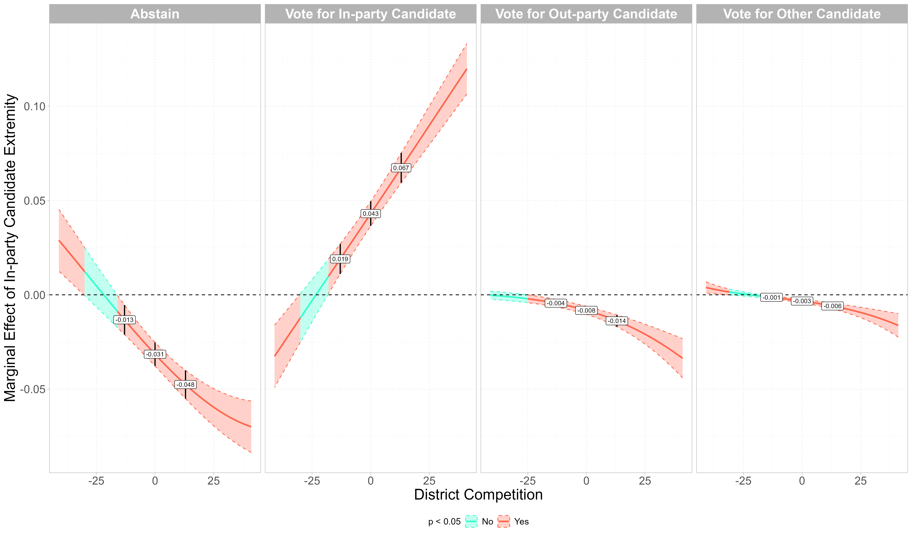

I spend far too much time thinking about data visualization. To make that time a little more productive for myself, I’ll use this part of the website to show off whatever graphs I’ve most recently made for the projects I’m working on, as well as the accompanying code.
The Average Marginal Effect of In-party Candidate Extremism by District Partisan Advantage (2010 to 2022)
The paper this figure is in can be found here. The goal of this figure is to show how the average marginal effect of the ideological extremity of a respondent in the CES’s in-party candidate varies based on the level of district competition. The code below only includes the code for this figure specifically and not the remainder of the analysis. The tricky thing with this figure was getting the regions to be fully continuous, as PVI as an integer variable. Part of the code creates synthetic data at the points in between where the marginal effect is not significant and where it is to make the regions seamlessly change. I am not sure why geom_ribbon() does not just do this in the first place, but the approach I used worked just fine.

Code
library(tidyverse)library(mclogit)##reading in the data from beforeread_rds('observational/cleaned data/ces_cleaned.rds') -> ces_cand_ideo_valread_csv('observational/data/extra_vars/pvi_all.csv') %>%filter(str_detect(seat, 'house') ==TRUE) %>%rename(cd = district) %>%mutate(year =factor(year,levels =levels(ces_cand_ideo_val$year)),cd =str_replace(cd, "(\\D)(\\d)", "\\1-\\2")) %>% janitor::clean_names() -> pvitheme_set(theme_light()+theme(legend.position ='bottom',legend.text =element_text(size =12),legend.title =element_text(size =12),panel.grid =element_line(linetype =2,color =alpha('lightgray',.6)),strip.text =element_text(color ='white', size =18,face ='bold'),axis.title =element_text(size =20),axis.text =element_text(size =15)))####################################insert code for the analysis here######################################in-partyexpand.grid(h_in_ext =seq(from =min(ces_cand_ideo_val$h_in_ext, na.rm =TRUE), to =max(ces_cand_ideo_val$h_in_ext, na.rm =TRUE),by = .01),pvi =seq(from =min(ces_cand_ideo_val$pvi, na.rm =TRUE), to =max(ces_cand_ideo_val$pvi, na.rm =TRUE),by =1),h_out_ext =median(ces_cand_ideo_val$h_out_ext, na.rm =TRUE),pid_str =median(ces_cand_ideo_val$pid_str, na.rm =TRUE),ideo_str =median(ces_cand_ideo_val$ideo_str, na.rm =TRUE),age =median(ces_cand_ideo_val$age, na.rm =TRUE),age2 =median(ces_cand_ideo_val$age2, na.rm =TRUE),educ2 =median(ces_cand_ideo_val$educ2, na.rm =TRUE),race2 =median(ces_cand_ideo_val$race2, na.rm =TRUE),gender =factor('Female',levels =c(levels(ces_cand_ideo_val$gender))),cd =as.factor(factor('AZ-02')),year =as.factor(median(as.numeric(as.character(ces_cand_ideo_val$year))))) -> test_i2marginaleffects::slopes(fit, newdata = test_i2, variables ='h_in_ext',type ='response', by ='pvi') %>%as_tibble() %>%rename(vote_choice = group) %>%select(vote_choice, pvi, estimate, conf.low,conf.high,predicted, predicted_lo,predicted_hi,p.value) %>%mutate(vote_choice =case_when(vote_choice =='no_turnout'~'Abstain', vote_choice =='in_party'~'Vote for In-party Candidate', vote_choice =='out_party'~'Vote for Out-party Candidate', vote_choice =='other_cand'~'Vote for Other Candidate'),vote_choice =factor(vote_choice,levels =c('Abstain','Vote for In-party Candidate','Vote for Out-party Candidate','Vote for Other Candidate'))) -> margin_in_full##graphing itmargin_in_full %>%mutate(sig =ifelse(p.value < .05, 'Yes', 'No'),group =consecutive_id(sig)) -> margin_in_full###making extra observations to fill in gaps on figuremargin_in_full %>%group_by(vote_choice,group) %>%filter(row_number() ==1|row_number() ==n()) %>%group_by(vote_choice) %>%filter(abs(pvi) !=41) %>%ungroup() %>%mutate(group1 =rep(c(1:(nrow(.)/2)),each =2)) -> group_dat group_dat %>%group_by(group1) %>%complete(pvi =full_seq(pvi,.01)) %>%fill(vote_choice,sig,group, .direction ='downup') %>%mutate(across(c(estimate,conf.low,conf.high),~seq(first(.), last(.), length.out =n()))) %>%ungroup() %>%filter(!pvi %in%unique(ces_cand_ideo_val$pvi)) %>%select(-group1) %>%group_by(vote_choice) %>%distinct(pvi, .keep_all =TRUE) %>%ungroup() -> fill_obs#putting it all together for the figuremargin_in_full %>%bind_rows(fill_obs) %>%ggplot(aes(x = pvi, y = estimate,ymin = conf.low, ymax = conf.high))+geom_ribbon(aes(color = sig, fill = sig,group = group), alpha =0.3, linetype =2)+geom_line(aes(color = sig, group = group),linewidth =1)+geom_hline(aes(yintercept =0), linetype =2)+geom_pointrange(data =filter(margin_in_full, abs(pvi) ==13|pvi==0),linewidth = .75)+geom_label(data =filter(margin_in_full, abs(pvi) ==13|pvi==0),aes(label =round(estimate, 3)), size =3)+facet_wrap(vars(vote_choice), nrow =1)+labs(y ='Marginal Effect of In-party Candidate Extremity', x ='District Competition',color ='p < 0.05', fill ='p < 0.05')+scale_color_manual(values =c('Yes'='#ff664d', 'No'='#33ffcc'))+scale_fill_manual(values =c('Yes'='#ff664d', 'No'='#33ffcc'))
Data Dashboard
Part of my work with the LeRoy Collins Institute has been to work on our election audit dashboard. For this, I created an interactive dashboard using shiny to display both the audit data and ballot images for several elections from Leon county. We’re currently working to expand the project to several other counties. The data dashboard for the 2024 general election in Leon county can be found below, but can be opened in full screen (which is a better experience in my opinion) by clicking here. The dashboards for other years can be found on our website.
Code
# Load necessary libraries and read datalibrary(tidyverse)library(htmlwidgets)library(DT)library(sf)library(shiny)library(shinydashboard)library(plotly)library(shinyWidgets)library(htmltools)library(leaflet)options(scipen =999)table_1 <-read_csv('table_1.csv')table_1 %>%mutate(`Difference_Choice Recorded`=`Difference_Choice Recorded`*-1,`Difference_Ballots Counted`=`Difference_Ballots Counted`*-1) %>%select(Contest, Choice, `Dominion_Ballots Counted`, `ClearBallot_Ballots Counted`,`Difference_Ballots Counted`, `Dominion_Choice Recorded`, `ClearBallot_Choice Recorded`,`Difference_Choice Recorded`,`Overvoted WithVote for this Choice`, `Undervoted WithoutVote for this Choice`) %>%rename('Ovals \n Counted \n Dominion'=`Dominion_Ballots Counted`, 'Audit Ovals \n Counted \n ClearBallot'=`ClearBallot_Ballots Counted`,'Difference in \n Ovals \n Counted'=`Difference_Ballots Counted`, 'Certified\nVote Count'=`Dominion_Choice Recorded`, 'Audit\nVote Count'=`ClearBallot_Choice Recorded`,'Difference\nin Counts'=`Difference_Choice Recorded`,'Over \n Vote'=`Overvoted WithVote for this Choice`, 'Under \n Vote'=`Undervoted WithoutVote for this Choice`) %>%select(-contains('Ovals')) -> table_1table_2 <- fst::read_fst('leon_2024g.fst')table_2 %>%rename('Ballot ID'= BallotID,'Choice'= cand,'Vote Type'= vote_type,'Ballot Link'= view_ballot,#'Oval Confidence Rank' = oval_confidence_rank,'Voting Method'= vote_mode,'Precinct'= PrecinctID) -> table_2st_read('Shape files - combined precincts', layer ='Leon_ShapeFile') %>%mutate(PRECINCT =str_replace_all(PRECINCT, '/', ' & ')) -> mapst_transform(map,crs =4326) -> mapSys.setenv('MAPBOX_TOKEN'='pk.eyJ1IjoiYXVzdGluLWN1dGxlciIsImEiOiJjbGt0enpwZG4wMW5iM3NsaDAxNjBoMm5nIn0.oBeanbdPK0aurRNUJG7jIg')outline <-function(x){ htmlwidgets::onRender(x,"function(el, x) { // Add hover event el.on('plotly_hover', function(data) { // Loop through each point hovered over data.points.forEach(function(point) { Plotly.restyle(el, {'marker.line.color': 'black', 'marker.line.width': 2}, [point.curveNumber]); }); }); // Add unhover event to reset the color el.on('plotly_unhover', function(data) { data.points.forEach(function(point) { Plotly.restyle(el, {'marker.line.color': 'rgba(0,0,0,0)', 'marker.line.width': 0}, [point.curveNumber]); }); }); } " )}ui <-fluidPage( tags$div(id ="map"),verbatimTextOutput("selected_precinct"), tags$head( tags$style(HTML('.sidebar-toggle{position: absolute; left: 0;}','.skin-blue .main-header .logo { background-color: white; }','.skin-blue .main-header .logo:hover { background-color: white; }','.skin-blue .sidebar-menu>li>a{ background-color:white; border-bottom: 1px solid #000000; }','.skin-blue .sidebar-menu>li>a:hover{ background-color:white; border-left: 3px solid #782F40; }','.skin-blue .main-header .navbar { background-color: white; margin-left: 0px !important; }','.skin-blue .main-sidebar { background-color: white; }','.skin-blue .main-sidebar .sidebar .sidebar-menu .active a{ background-color: white; }','.skin-blue .main-header .logo { background-color: white; color: black; }','.skin-blue .main-header .logo:hover { background-color: white; }','.skin-blue .main-header .navbar { background-color: white; color: #000000; }','.skin-blue .main-header .navbar .sidebar-toggle { color: #000000; background-color: #dfedeb; border-bottom: 2px solid black; border-right: 2px solid black;}','.skin-blue .main-header .navbar .sidebar-toggle:hover { background-color: #782F40;}','.skin-blue .main-sidebar { background-color: white; } ','skin-blue .main-sidebar .sidebar .sidebar-menu .active a{ background-color: #782F40; }','.main-header .sidebar-toggle:before { content: "Filter Dashboard"; font-family: calibri; font-size: 15px; font-weight: 900; }',".content-wrapper { background-color: white; margin: 0}",'.container-fluid {font-size: 12px; padding: 0}',".custom-select-wrapper {margin:1px; background-color: #dfedeb;}",".custom-select {margin:1px; width: 100%; max-width: 350px; background-color: #dfedeb;}",".stripe tbody tr:nth-child(even) { background-color: #dfedeb; }",'.shiny-input-container:not(.shiny-input-container-inline){max-height: 43px;color: #000000; background-color: white;}','.shiny-input-checkboxgroup {margin:1px; background-color: white; justify-content: center; color: #000000;}','.shiny-input-checkboxgroup.shiny-input-container-inline label~.shiny-options-group, .shiny-input-radiogroup.shiny-input-container-inline label~.shiny-options-group{margin-left: 1px}','.js-irs-0 {background: #dfedeb; }','.js-irs-0 .irs-bar-edge {background: #dfedeb; }','.box {margin:1px; border: 1px solid white; -webkit-box-shadow: none; -moz-box-shadow: none;box-shadow: none;}', '.box-header { background-color: #f9f9f9; }','.selectize-control { padding-left: 7px; padding-right: 7px; margin-bottom:100px;color: #000000;}','.shiny-input-radiogroup {margin: 1px; background-color: white; justify-content: center;color: #000000;}',".plotly { max-width: 100%;margin:1px }",".content-body {margin:1px; padding: 0; }",".dataTable-wrapper { margin: 1px;}",".row { margin-bottom: 0; }",'.col-special {margin-right:-15px}','.box-body {padding: 1px}','.total-table{margin:0; justify-content: center}','.link{color: #782F40; font-size: 25px; color: #782F40;font-weight: bold}','.link:hover{color: #00524d}' )), tags$script("$(document).ready(function(){ var mapPlots = document.getElementsByClassName('plotly'); if (mapPlots.length > 0) { for (var i = 0; i < mapPlots.length; i++) { mapPlots[i].addEventListener('plotly_relayout', function(eventdata){ Plotly.relayout(this, {autosize: true}); }); } } });" ) ),dashboardPage(dashboardHeader(),dashboardSidebar(collapsed =TRUE,sidebarMenu(h2(style ='text-align: left; 24px; font-weight: bold; color: #782F40;',div(HTML('<p>Audit Filters</p>'))),menuItem(div(style ='padding-bottom: 20px',selectInput("Contest", label ="Contest",selected ='President and Vice President',choices =c('All', unique(table_1$Contest))))),menuItem(selectInput("Candidate", label ="Choice",choices =c("All", unique(table_1$Choice)))),h2(style ='text-align: left; 24px; font-weight: bold; color: #782F40;',div(HTML('<p>Ballot Filters</p>'))),menuItem(radioButtons("OvalCat", label ="Oval Confidence Rank",choices =c("All", '1-20'), inline =TRUE, selected ='All')),menuItem(checkboxGroupInput("VotingMethod", label ="Voting Method",selected =c('Election Day Vote'),choices =c(unique(table_2$`Voting Method`)),inline =TRUE)),menuItem(selectInput("Precinct", label ="Precinct",choices =c("All", unique(table_2$Precinct)))),menuItem(checkboxGroupInput("VoteType", label ="Vote Type", choices =c('Voted for Choice','Voted for Other Choice','Overvote', 'Undervote'), selected =c('Voted for Choice'),inline =TRUE))) ),dashboardBody( tags$script(HTML("$(document).on('shiny:connected', function(event) { $(document).on('click', function(evt) { // Get the sidebar element var el = document.getElementById('sidebarCollapsed'); // Check if the click is outside the sidebar and if the sidebar is currently not collapsed if (!$(evt.target).closest('#sidebarCollapsed').length && el.getAttribute('data-collapsed') !== 'true') { // Collapse the sidebar and set data-collapsed to true el.setAttribute('data-collapsed', 'true'); $('body').addClass('sidebar-collapse'); // Collapse the sidebar using the class } }); // Event to reopen the sidebar when the toggle button is clicked $('#sidebar-toggle').on('click', function() { var el = document.getElementById('sidebarCollapsed'); // Toggle data-collapsed attribute between 'true' and 'false' if (el.getAttribute('data-collapsed') === 'true') { el.setAttribute('data-collapsed', 'false'); $('body').removeClass('sidebar-collapse'); // Remove class to expand sidebar } else { el.setAttribute('data-collapsed', 'true'); $('body').addClass('sidebar-collapse'); // Add class to collapse sidebar } });});$(document).on('click', '#resetButton', function() { Shiny.setInputValue('reset_map_filter', Math.random()); });" )),fluidRow(column(width=5,box(width =12, solidHeader =TRUE,div(HTML('<p> <a class = "link" href="https://fsu.qualtrics.com/jfe/form/SV_dj1SffcmA9nC4dw">Click here to tell us about your experience!</a></p>')))),column(width =7,box(width =12,h3("Aggregate Audit Data", style ="text-align: left; font-size: 24px; font-weight: bold; margin: 0;")) )),fluidRow(box(width =3, solidHeader =TRUE,column(width =12, ) ),column(width =12,box(width =4, solidHeader =TRUE,#h3("space", style = "text-align: left; font-size: 24px; font-weight: bold; margin: 0;color:white;"),div(style ="display: flex; justify-content: center;",div(style ="width: 100%; height: 100%;", plotlyOutput("diff_plot") ) ) ),box(width =4, solidHeader =TRUE,div(style ="display: flex; justify-content: center;",div(style ="width: 100%; height: 100%;", plotlyOutput("ag_plot1") ) ) ),#box(width = 3, solidHeader = TRUE,# div(style = "display: flex; justify-content: center;",# div(style = "width: 100%; height: 100%;", # plotlyOutput("ag_plot2")# )# )# ),box(width =4, solidHeader =TRUE,div(style ="display: flex; justify-content: center;",div(style ="width: 100%; height: 100%;", plotlyOutput("ag_plot3") ) ) ) )),fluidRow(box(width =12,div(DTOutput("my_table") ) ),fluidRow(column(width =10),column(width =1,downloadButton('aud_tab_download', 'Download Audit Data')) )),fluidRow(box(width =8, solidHeader =TRUE,div(DTOutput("my_table_2")) ),column(width =4,box(width =12, solidHeader =TRUE,h3("Leon County Precincts", style ="text-align: center; font-size: 24px; font-weight: bold; margin: 0;"),div(style ="display: flex; justify-content: center;",div(style ="width: 100%; height: 100%;", leafletOutput("map_plot") ) ) ) )) ) ))# Create the Shiny app serverserver <-function(input, output, session) { filtered_table <-reactive({ filtered <- table_1# Handle Contest filterif (input$Contest !="All"&&!is.null(input$Contest)) { filtered <-filter(filtered, Contest == input$Contest) }if (input$Candidate !='All'&&!is.null(input$Candidate)){ filtered <-filter(filtered, Choice == input$Candidate) } filtered }) sketch <- htmltools::tags$table(tableHeader(names(table_1)),tableFooter(rep("", ncol(table_1))) ) output$my_table <-renderDT({datatable(filtered_table(), filter ='none', escape =FALSE, options =list(scrollY =200, dom ='Bfrtip', lengthMenu =list(-1),searching =FALSE, info =FALSE, paging =FALSE),rownames =FALSE, selection ='none',class ='cell-border stripe',fillContainer =TRUE,container = sketch ) }) output$aud_tab_download <-downloadHandler(filename ='audit_data.csv',content =function(con){write_csv(filtered_table(), con) }) filtered_choices <-reactive({ choices <-c('All', unique(table_1$Choice))# Handle Contest filterif (input$Contest !="All"&&!is.null(input$Contest)) { choices <-c('All', unique(table_1$Choice[table_1$Contest == input$Contest])) } choices })observe({updateSelectInput(session, inputId="Candidate", choices =c(filtered_choices()),selected ='All')}) output$ag_plot1 <-renderPlotly({ if (input$Contest !="All") {#making the plot data aggregated_data1 <-filtered_table() %>%group_by(Contest) %>%select(-contains('Difference')) %>%summarize(across(where(is.numeric), \(x) sum(x, na.rm =TRUE)),`Under \n Vote`=`Under \n Vote`/n()) %>%pivot_longer(cols =c(`Certified\nVote Count`:`Under \n Vote`),values_to ='Count') %>%filter(name %in%c('Audit\nVote Count','Certified\nVote Count')) %>%mutate(name =factor(name,levels =c('Certified\nVote Count','Audit\nVote Count'))) }if (input$Contest =="All"&&!is.null(input$Contest)) { aggregated_data1 <-filtered_table() %>%select(-contains('Difference')) %>%summarize(across(where(is.numeric), \(x) sum(x, na.rm =TRUE))) %>%pivot_longer(cols =c(`Certified\nVote Count`:`Under \n Vote`),values_to ='Count') %>%filter(name %in%c('Audit\nVote Count','Certified\nVote Count')) %>%mutate(name =factor(name,levels =c('Certified\nVote Count','Audit\nVote Count'))) }#making the plot gg <-ggplot(aggregated_data1, aes(x = name, y = Count, fill = name,text =ifelse(name =='Audit\nVote Count','Audit conducted using Clear Ballot Machines.', 'Votes counted using Dominion Machines.'))) +geom_bar(stat ='identity', position =position_dodge(.95)) +geom_text(aes(y = Count*1.025, label =paste('<b>', scales::comma(Count), '</b>', sep ='')))+scale_y_continuous(labels = scales::comma)+labs(x ='', y ='', title ='Votes')+theme_minimal() +theme(legend.position ='none',plot.title =element_text(hjust = .5,face ='bold'),strip.background =element_blank(),strip.text.x =element_blank()) #converting to plotlyoutline(ggplotly(gg,tooltip =c('text'))) %>%config(modeBarButtonsToAdd =c('toImage'),modeBarButtonsToRemove =c('select','hoverClosestCartesian','hoverCompareCartesian','lasso2d'),displaylogo =FALSE) %>%layout(xaxis =list(fixedrange =TRUE),yaxis =list(fixedrange =TRUE)) })#output$ag_plot2 <- renderPlotly({ # if (input$Contest != "All") {#making the plot data# aggregated_data2 <- filtered_table() %>% # group_by(Contest) %>% # select(-contains('Difference')) %>% # summarize(across(where(is.numeric), \(x) sum(x, na.rm = TRUE)),# `Under \n Vote` = `Under \n Vote`/n()) %>% # pivot_longer(cols = c(`Ovals \n Counted \n Dominion`:`Under \n Vote`),# values_to = 'Count') %>% # filter(name %in% c('Audit Ovals \n Counted \n ClearBallot',# 'Ovals \n Counted \n Dominion')) %>% # mutate(name = factor(name,# levels = c('Ovals \n Counted \n Dominion',# 'Audit Ovals \n Counted \n ClearBallot')))# }# if (input$Contest == "All" && !is.null(input$Contest)) {# aggregated_data2 <- filtered_table() %>% # select(-contains('Difference')) %>% # summarize(across(where(is.numeric), \(x) sum(x, na.rm = TRUE))) %>% # pivot_longer(cols = c(`Ovals \n Counted \n Dominion`:`Under \n Vote`),# values_to = 'Count') %>% # filter(name %in% c('Audit Ovals \n Counted \n ClearBallot',# 'Ovals \n Counted \n Dominion')) %>% # mutate(name = factor(name,# levels = c('Ovals \n Counted \n Dominion',# 'Audit Ovals \n Counted \n ClearBallot')))# }#making the plot# gg <- ggplot(aggregated_data2,# aes(x = name, y = Count, fill = name,# text = paste(ifelse(name == 'Audit Ovals \n Counted \n ClearBallot',# 'Audit Ovals', 'Ovals'), 'Count:', scales::comma(Count)))) +# geom_bar(stat = 'identity', position = position_dodge(.95)) +# geom_text(aes(y = Count*1.025, # label = paste('<b>', scales::comma(Count), '</b>', sep = '')))+# scale_y_continuous(labels = scales::comma)+# labs(x = '', y = '', title = 'Ovals')+# theme_minimal() +# theme(legend.position = 'none',# plot.title = element_text(hjust = .5,# face = 'bold'),# strip.background = element_blank(),# strip.text.x = element_blank()) #converting to plotly# outline(ggplotly(gg,tooltip = c('text'))) %>% # config(displayModeBar = FALSE) %>% # layout(xaxis = list(fixedrange = TRUE),# yaxis = list(fixedrange = TRUE))#}) output$ag_plot3 <-renderPlotly({ if (input$Contest !="All") {#making the plot data aggregated_data3 <-filtered_table() %>%group_by(Contest) %>%select(-contains('Difference')) %>%summarize(across(where(is.numeric), \(x) sum(x, na.rm =TRUE)),`Under \n Vote`=`Under \n Vote`/n()) %>%pivot_longer(cols =c(`Certified\nVote Count`:`Under \n Vote`),values_to ='Count') %>%filter(name %in%c('Over \n Vote', 'Under \n Vote')) %>%mutate(name =factor(name,levels =c('Over \n Vote', 'Under \n Vote'))) }if (input$Contest =="All"&&!is.null(input$Contest)) { aggregated_data3 <-filtered_table() %>%select(-contains('Difference')) %>%summarize(across(where(is.numeric), \(x) sum(x, na.rm =TRUE))) %>%pivot_longer(cols =c(`Certified\nVote Count`:`Under \n Vote`),values_to ='Count') %>%filter(name %in%c('Over \n Vote', 'Under \n Vote')) %>%mutate(name =factor(name,levels =c('Over \n Vote', 'Under \n Vote'))) }#making the plot gg <-ggplot(aggregated_data3, aes(x = name, y = Count, fill = name,text =ifelse(name =='Over \n Vote','An overvote is when a person casts votes for\nmore than one candidate in a given contest.','An undervote is when a voter does not cast a\nvote for any candidate in a given contest.'))) +geom_bar(stat ='identity', position =position_dodge(.95)) +geom_text(aes(y =ifelse(name =='Over \n Vote', Count*1.35, Count*1.025), label =paste('<b>', scales::comma(Count), '</b>', sep ='')))+scale_y_continuous(labels = scales::comma)+labs(x ='', y ='', title ='Vote Type')+scale_fill_brewer(palette ='Accent')+theme_minimal() +theme(legend.position ='none',plot.title =element_text(hjust = .5,face ='bold'),strip.background =element_blank(),strip.text.x =element_blank()) #converting to plotlyoutline(ggplotly(gg,tooltip =c('text'))) %>%config(modeBarButtonsToAdd =c('toImage'),modeBarButtonsToRemove =c('select','hoverClosestCartesian','hoverCompareCartesian','lasso2d'),displaylogo =FALSE) %>%layout(xaxis =list(fixedrange =TRUE),yaxis =list(fixedrange =TRUE)) }) output$diff_plot <-renderPlotly({ if (input$Contest !="All") {#making the plot data diff_dat <-filtered_table() %>%mutate(`Difference\nin Counts`= (`Difference\nin Counts`),Choice =str_replace_all(Choice, ' ', '\n')) %>%select(Contest,Choice,`Difference\nin Counts`) %>%pivot_longer(cols =`Difference\nin Counts`,values_to ='Count') }if (input$Contest =='All'){ diff_dat <-filtered_table() %>%select(`Difference\nin Counts`) %>%summarize(Count =sum(abs(`Difference\nin Counts`))) %>%mutate(Choice ='Total') }if (input$Contest !='All'){ lims <-ylim(0,5) nudge <- .15 diff_lab <-labs(x ='Choice', y ='Count',title ='Difference in Votes Recorded') text <-ifelse(diff_dat$Count <0,paste(abs(diff_dat$Count), 'more vote(s) were cast for this choice/candidate than counted on election day.',sep =' '),ifelse(diff_dat$Count ==0,'The vote count from election day and the audit were the same for this choice/candidate.',paste(abs(diff_dat$Count), 'less vote(s) were cast for this choice/candidate than counted on election day.',sep =' '))) }if(input$Contest =='All'){ lims <-ylim(0,50) nudge <-1 diff_lab <-labs(x ='', y ='Count',title ='Difference in Votes Recorded') text <-'The absolute total of differences found between the certified election and audit.' }#making the plot gg1 <-ggplot(diff_dat, aes(x = Choice, y =abs(Count), fill = Choice,text = text)) +geom_bar(stat ='identity') + lims+ diff_lab+geom_text(aes(label =paste('<b>', abs(Count), '</b>', sep ='')), nudge_y = nudge)+scale_fill_brewer(palette ='Dark2')+theme_minimal() +theme(legend.position ='none',plot.title =element_text(hjust = .5,face ='bold'),strip.background =element_blank(),strip.text.x =element_blank()) #converting to plotlyoutline(ggplotly(gg1,tooltip =c('text'))) %>%config(modeBarButtonsToAdd =c('toImage'),modeBarButtonsToRemove =c('select','hoverClosestCartesian','hoverCompareCartesian','lasso2d'),displaylogo =FALSE) %>%layout(xaxis =list(fixedrange =TRUE),yaxis =list(fixedrange =TRUE)) }) filtered_table_2 <-reactive({ filtered <- table_2if (!is.null(input$VotingMethod) &&length(input$VotingMethod) >0) { filtered <-filter(filtered, `Voting Method`%in% input$VotingMethod) }if (is.null(input$VotingMethod) &&length(input$VotingMethod) ==0){ filtered <- filtered[NULL,] }if (input$Contest !="All"&&!is.null(input$Contest)) { filtered <-filter(filtered, Contest == input$Contest) }if (!is.null(input$VoteType) &&length(input$VoteType) >0) { filtered <-filter(filtered, `Vote Type`%in% input$VoteType) }if (is.null(input$VoteType) &&length(input$VoteType) ==0){ filtered <- filtered[NULL,] }if (input$OvalCat !="All"&& input$OvalCat =='1-20') { filtered <-filter(filtered, `Oval Confidence Rank`<=20) }if (input$Precinct !='All'&&!is.null(input$Precinct)){ filtered <-filter(filtered, Precinct == input$Precinct) }if (input$Candidate !='All'&&!is.null(input$Candidate)){ filtered <-filter(filtered, Choice ==word(input$Candidate, -1)) }select(filtered, -oval_cat) }) output$my_table_2 <-renderDT({datatable(filtered_table_2(), filter ='none', options =list(rowsGroups =list(0),scrollY =300, dom ='Bfrtip', lengthMenu =list(5000, -1),searching =FALSE, info =FALSE, serverSide =TRUE, deferRender =TRUE, virtualScroll =TRUE),rownames =FALSE, selection ='none',class ='cell-border stripe',fillContainer =TRUE,escape =FALSE,callback =JS('table.page(1).draw(false);') ) %>%formatStyle(columns ='Ballot Link',target ='row', css =list("display:block; width:100%")) }) filtered_map_plot <-reactive({ my_palette <-c("#D3D3D3", "#00524d")if (input$Precinct !='All'&&!is.null(input$Precinct)){ selected_precinct <- input$Precinct map$color <-ifelse(map$PRECINCT == selected_precinct, "#00524d", "#D3D3D3")leaflet(data = map,options =leafletOptions(dragging =FALSE,minZoom =9,zoomControl =FALSE,scrollWheelZoom =FALSE,doubleClickZoom =FALSE,boxZoom =FALSE,touchZoom =FALSE )) %>%addProviderTiles('CartoDB.Voyager') %>%addPolygons(fillColor =~color,fillOpacity = .75,color ="#000000", # Border colorweight =1,opacity =1,layerId =~PRECINCT,label =~PRECINCT,highlight =highlightOptions(weight =2,color ="#000000",fillColor ='#00524d',fillOpacity =0.75,bringToFront =TRUE ) ) %>%setView(lng =-84.353334, lat =30.455000, zoom =9.45) %>%onRender(" function(el, x) { var map = this; // Compute bounds from polygons var bounds = L.latLngBounds([]); map.eachLayer(function(layer) { if (layer instanceof L.Polygon) { try { bounds.extend(layer.getBounds()); } catch (e) {} } }); if (bounds.isValid()) { map.fitBounds(bounds, {padding: [10, 10]}); // Delay zoom correction slightly so it happens after fitBounds setTimeout(function() { var currentZoom = map.getZoom(); var minZoom = 9; // Set your minimum zoom level here if (currentZoom < minZoom) { map.setZoom(minZoom); } }, 250); } // Add zoom control to top right L.control.zoom({ position: 'topright' }).addTo(map); }") %>%addControl(html =" <style> #resetButton { padding: 6px; font-size: 12px; background: #f5f5f5; border: 1px solid #ccc; border-radius: 4px; cursor: pointer; transition: background 0.3s; } #resetButton:hover { background: #00524d; color: #D3D3D3; } </style> <button id='resetButton'>All Precincts</button> ",position ="topleft" ) } else { map$color <-"#00524d"leaflet(data = map,options =leafletOptions(dragging =FALSE,minZoom =9,zoomControl =FALSE,scrollWheelZoom =FALSE,doubleClickZoom =FALSE,boxZoom =FALSE,touchZoom =FALSE )) %>%addProviderTiles('CartoDB.Voyager') %>%addPolygons(fillColor =~color,fillOpacity = .75,color ="#000000", # Border colorweight =1,opacity =1,layerId =~PRECINCT,label =~PRECINCT,highlight =highlightOptions(weight =2,color ="#000000",fillColor ='#00524d',fillOpacity =0.75,bringToFront =TRUE ) ) %>%setView(lng =-84.353334, lat =30.455000, zoom =9.45) %>%onRender(" function(el, x) { var map = this; // Compute bounds from polygons var bounds = L.latLngBounds([]); map.eachLayer(function(layer) { if (layer instanceof L.Polygon) { try { bounds.extend(layer.getBounds()); } catch (e) {} } }); if (bounds.isValid()) { map.fitBounds(bounds, {padding: [10, 10]}); // Delay zoom correction slightly so it happens after fitBounds setTimeout(function() { var currentZoom = map.getZoom(); var minZoom = 9; // Set your minimum zoom level here if (currentZoom < minZoom) { map.setZoom(minZoom); } }, 250); } // Add zoom control to top right L.control.zoom({ position: 'topright' }).addTo(map); }") %>%addControl(html =" <style> #resetButton { padding: 6px; font-size: 12px; background: #f5f5f5; border: 1px solid #ccc; border-radius: 4px; cursor: pointer; transition: background 0.3s; } #resetButton:hover { background: #00524d; color: #D3D3D3; } </style> <button id='resetButton'>All Precincts</button> ",position ="topleft" ) } }) output$map_plot <-renderLeaflet({filtered_map_plot() })# Observe leaflet click event for precinctsobserveEvent(input$map_plot_shape_click, { event <- input$map_plot_shape_clickif (!is.null(event$id)) {# If a precinct is clicked, update the input for precinct selection clicked_precinct <- event$idupdateSelectInput(session, "Precinct", selected = clicked_precinct) } })observeEvent(input$reset_map_filter, {updateSelectInput(session, "Precinct", selected ='All') })}# Run the Shiny appshinyApp(ui, server)
Matching to Improve Ron DeSantis voteshare in the Florida Elections Study (FES) and the CES
This figure is from an earlier version of the survey weighting paper.
Code
library(tidyverse)library(scales)#loading in datafes_out <-read_csv('data/outcomes_all.csv')fes_leon_out <-read_csv('data/outcomes_leon_all.csv')fes_pid_reg <-read_csv('data/outcomes_all_pid_reg.csv')ces_out <-read_csv('data/outcomes_all_ces.csv')#merging the data and making the changes to produce the graphfes_out %>%bind_rows(ces_out, fes_pid_reg, fes_leon_out) %>%filter(cand =='DeSantis') %>%mutate(lower_95 = dv_val -1.96* se,upper_95 = dv_val +1.96* se,lower_84 = dv_val -1.4051* se,upper_84 = dv_val +1.4051* se,strata =str_replace_all(strata, 'Pid', 'Party Reg.'),strata =str_replace_all(strata, 'Age, Gender, Race', 'Demographics'),strata =factor(strata,levels =c('No Stratification','County, Votemode, Gender, Race, Party Reg.','County, Votemode, Demographics','County, Votemode, Demographics, Party Reg.')),scheme =str_replace_all(scheme, 'party', 'Party'),scheme =str_replace_all(scheme, 'Party', 'Party Reg.'),scheme =str_replace_all(scheme, 'precinct', 'Precinct'),scheme =str_replace_all(scheme, 'CMAGR', 'County \n Votemode \n Demographics'),scheme =str_replace_all(scheme, '\\+', '\n'),scheme =str_replace_all(scheme, 'Votemode', 'Vote Mode'),survey =factor(survey,levels =c('CES','FES','FES w/Leon resample','FES PID with Reg')),across(where(is.numeric),~./100)) %>%filter(strata =='No Stratification'| strata =='County, Votemode, Demographics, Party Reg.') %>%ggplot(aes(x = scheme, y = dv_val, color = survey, shape = survey))+geom_linerange(aes(ymin = lower_84, ymax = upper_84), position =position_dodge(width = .75),linewidth =1.5)+geom_pointrange(aes(ymin = lower_95, ymax = upper_95), position =position_dodge(width = .75),size = .75)+ ggh4x::facet_nested_wrap(vars(strata), ncol =4)+geom_hline(aes(yintercept = .594), linetype =2)+scale_color_brewer(palette ='Dark2')+labs(color ='', shape ='', title ='Stratification Variables',caption ='Notes: Exact matching was done on county. Demographics = Age,Gender, and Race',x ='', y ='DeSantis Voteshare')+scale_y_continuous(limits =c(0.415, 0.635), breaks =c(0.45, 0.5, 0.55, 0.6),labels =percent_format()) +theme_classic()+theme(plot.title =element_text(hjust = .5, face ='bold', color ='gray54', size =25),plot.caption =element_text(color ='gray54', size =15),legend.position ='bottom',legend.text =element_text(face ='bold',size =15),strip.text =element_text(size =13, face ='bold'),axis.text =element_text(size =13, face ='bold'),axis.title.y =element_text(size =13, face ='bold'))